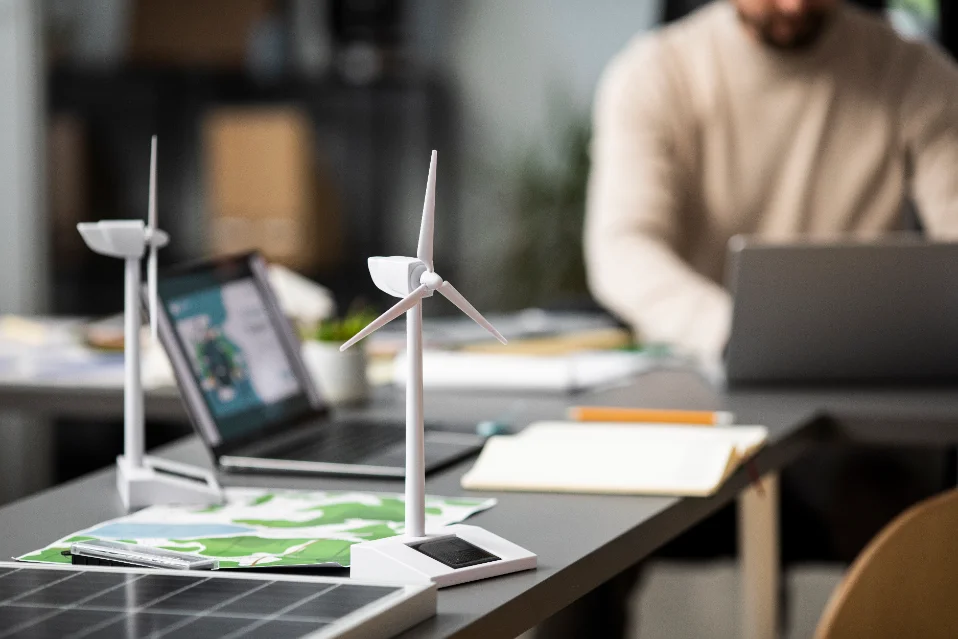
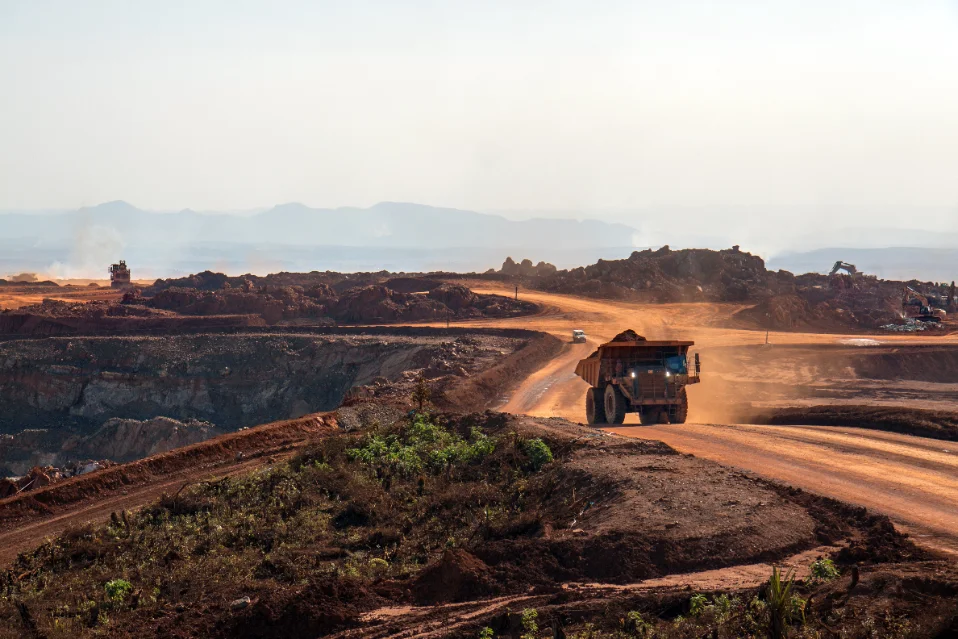
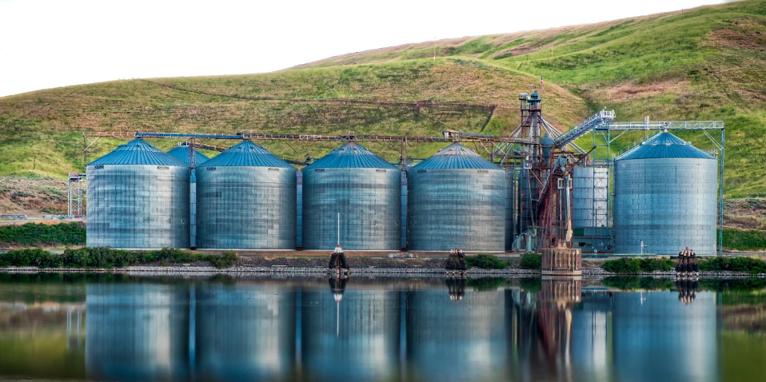
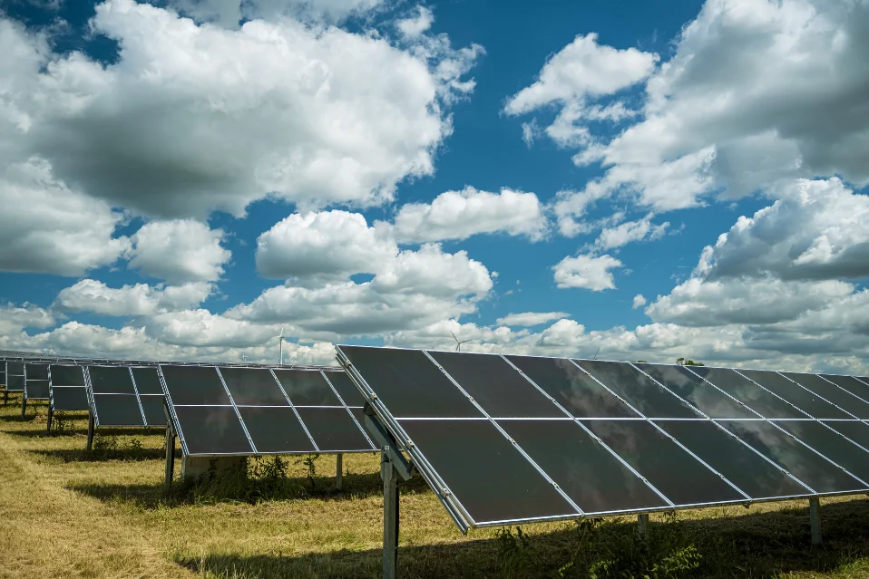
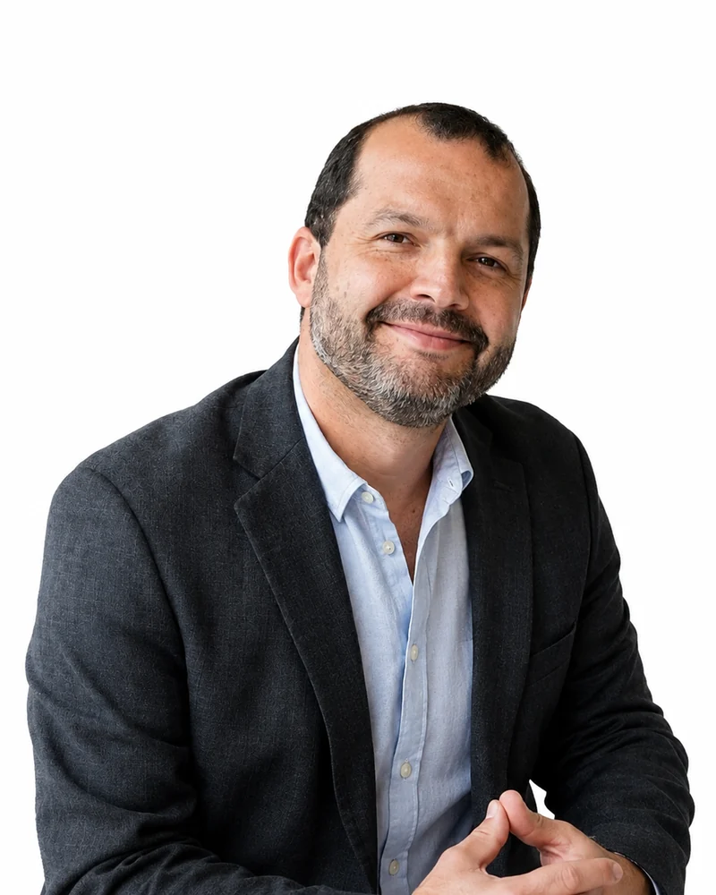

Desarrollo de activos
De la idea al cierre financiero: prefactibilidad, estructuración y dirección de proyectos.
Luxiom es una firma de desarrollo estratégico de activos. Nos asociamos con propietarios de activos, inversionistas y gobiernos para desbloquear el valor de proyectos complejos.
El valor no se desbloquea solo.Operamos en el ciclo completo: originación, articulación de consorcios, estrategia regulatoria y estructuración financiera, hasta el contrato firmado.
Territorio, concesión o portafolio con valor no capturado y sin ruta técnica ni comercial definida.
Permisología, evaluación ambiental o interlocución con autoridades que dejó de avanzar.
Socios industriales, financistas y offtakers que deben converger en una estructura viable.
Ir o no ir. Cuánto cuesta de verdad. Qué riesgo se está subestimando.
QUÉ HACEMOS

De la idea al cierre financiero: prefactibilidad, estructuración y dirección de proyectos.
Identificación, negociación y cierre con socios industriales y financieros.

Evaluación ambiental, permisos, relacionamiento con gobiernos y comunidades.
Project finance, garantías, cierre con banca e inversionistas.

Negociación y administración de compraventa de energía, construcción y abastecimiento.

Compra de combustibles, cobertura de precio, cadena de abastecimiento.
Generación renovable, almacenamiento, hidrógeno y amoníaco verde
Transporte de gas, terminales, desalación
Minería y activos territoriales
Data centers y grandes consumidores
Operación: Chile · Colombia · Brasil
Proyección: Estados Unidos · Europa · Asia
El juicio no se delega. La ejecución se estructura con el equipo y la red que cada mandato requiere.
Acompañamos desde el diagnóstico hasta el cierre, no hasta la entrega de un informe.
Trabajamos dentro de la estructura y los tiempos de quien nos manda, no en paralelo a ellos.
Acceso directo a socios industriales, banca, reguladores y autoridades.
EXPERIENCIA

Luis Sarrás, Socio Fundador y Director Ejecutivo de Luxiom. Ingeniero Civil Electricista de la Universidad de Chile, desarrolló 31 años de carrera en Gener y AES, que cerró como Chief Development Officer de AES Andes. Antes fue vicepresidente internacional de hidrógeno verde de AES Corporation, donde estructuró consorcios y alianzas internacionales por más de US$20.000 MM en Chile, Colombia y Brasil, y cerró financiamiento estructurado por US$1.800 MM sobre un portafolio de 2,2 GW.
Recibió el Founders' Award de AES Corporation en 2011, primer chileno en obtenerlo. Cuenta con nueve años de experiencia en directorios de infraestructura regulada: Gasoducto GasAndes, H2 Chile (Asociación Chilena del Hidrógeno Verde) y Empresa Eléctrica Santiago. Habla español, inglés y portugués.
Cifras correspondientes a proyectos y operaciones lideradas por Luis Sarrás durante su gestión en AES.
POR QUÉ LUXIOM
Nueve años como director de infraestructura regulada, décadas presentando ante comités de inversión.
Acceso directo a ministerios, reguladores y autoridades en tres continentes.
La ejecución se estructura según cada mandato.
CONTACTO